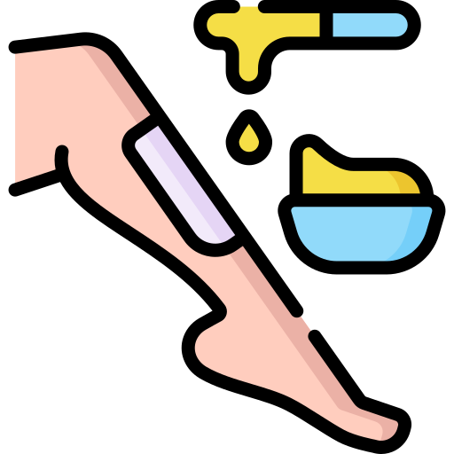

Depilação

O método de cera quente elimina o pelo pela raiz, por isso o pelo demora mais tempo para crescer, deixando a pele macia e saudável.
Manicure

Profissionais responsáveis por tratar das mãos e pés dos clientes, aparando, polindo e esmaltando suas unhas.
Drenagem Linfatica
Melhora a circulação sanguínea, edema (inchaço), dores e ajuda na liberação de toxinas, melhora aparência cutânea, além de modelar a silhueta!
Progressiva
Sem formol, uma inovadora formulação para alinhar os cabelos. Através da poderosa carbosisteína neutralizada é totalmente compatível com qualquer processo químico.
Hidratação

A hidratação constante é um grande aliado para manter os cabelos saudáveis, com brilho, sedosos e macios, dependendo das condições dos fios, ela deve ser feita toda semana, a cada 15 dias ou mensalmente.
Microblanding
O microblanding é uma técnica milenar japonesa, adaptada aos novos tempos, essa técnica consiste em micropgmentar a pele sem o auxilio de maquinas convencionais (dermógrafo) e sim um instrumento manual.